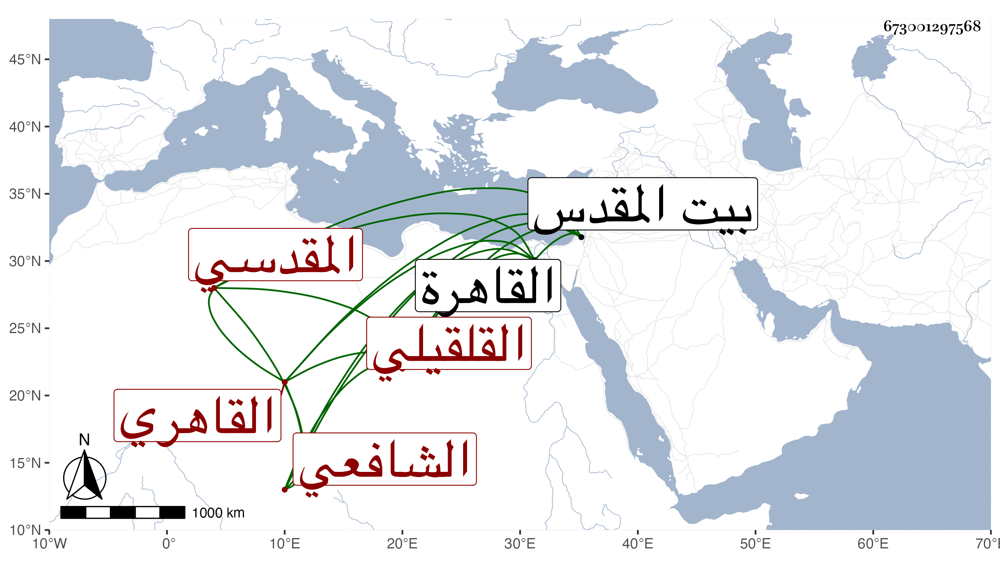

0902Sakhawi.DawLamic.ITO20230111-ara1.EIS1600.673001297568
Biography ID: 673001297568
88
محمد بن أحمد بن محمد بن أحمد بن إبراهيم بن مفلح نجم الدين حفيد الشمس القلقيلي المقدسي ثم القاهري الشافعي الماضي أبوه وجده ويعرف بالقلقيلي . نشأ ببيت المقدس فحفظ القرآن واشتغل قليلا وسمع هناك حين كنت به على الجمال ابن جماعة والتقى القلقشندي وقريبيه أبي حامد أحمد والعلاء على ابني عبد الرحمن القلقشندي والجمال يوسف بن منصور حسبما بينته في موضع آخر ثم قدم القاهرة فأخذ عن ابن قاسم والفخر المقسي والجوجري وزكريا وقرأ عليه في القرآن وكذا قرأ على ابن لحمصاني والسنهوري وحضر عندي في رجب سنة أربع وسبعين مجلسا من الأمالي وكذا سمع بعض ترجمة النووي من تأليفي ، ثم انتمى للبقاعي فزاد فساده وعاد ضرره على المسلمين وعناده وصار يغريه لما علم من جرآته على الناس خصوصا أهل الاستقامة واحدا واحدا ثم لم يلبث أن جاهره بكل قبيح وعمل فيه قطعة نظما ونثرا قالها بمجلس ابن مزهر بمعاونة ابن قاسم ثم تخاصم مع المعين . وكذا رافع في عبد البر بن الشحنة بعد مزيد الصداقة والاتحاد بينهما وزعم أنه لا يحسن الفاتحة بحيث قرأها بحضرة السلطان علي الزين جعفر والاخميمي وقال أولهما إنها قراءة تصح بها الصلاة ، وأهين هذا بالضرب والترسيم وأشيع أن الفخر أذن له في التدريس وأنكر العقلاء المتقون وذلك وحمد والجوجري حيث لم ينجر معه لذلك ، وسيرته شهيرة وربما لبس ببهتانه وتصنعه في إظهار إحسانه بحيث يروج على بغض ضعفاء العقول ممن لا فهم له ولا معقول كبعض الخدام وغيرهم من الأغبياء اللئام ومع ذلك فسنة الله جارية فيه ولا زال أمره في انخفاض .
